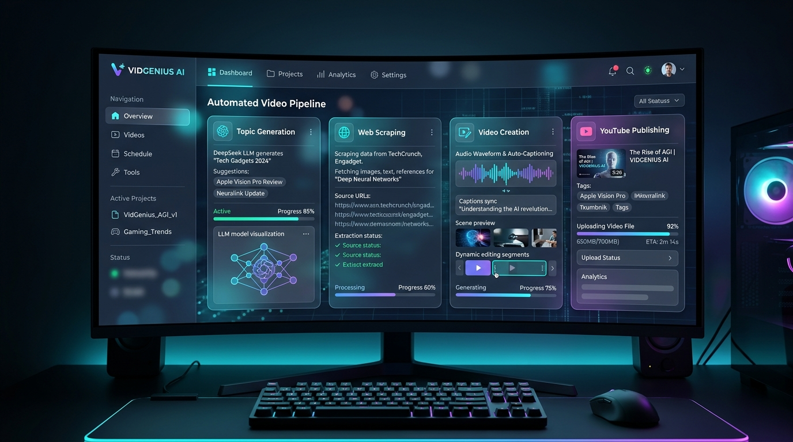

Python Full StackYouTube Automation AI Tool
• Engineered an end-to-end web app for automated YouTube video creation: topic generation, scraping, auto-captioning, and upload via Google APIs.
• Designed an intuitive workflow management UI enabling non-technical users to run automation pipelines.